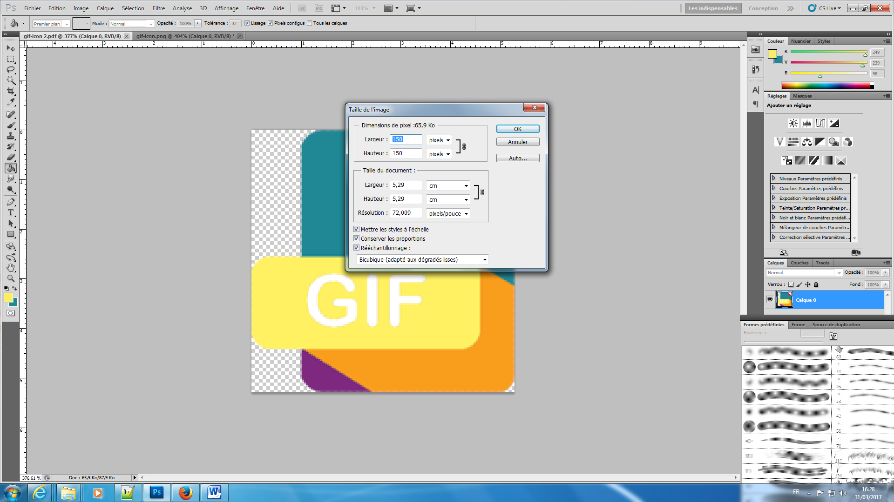
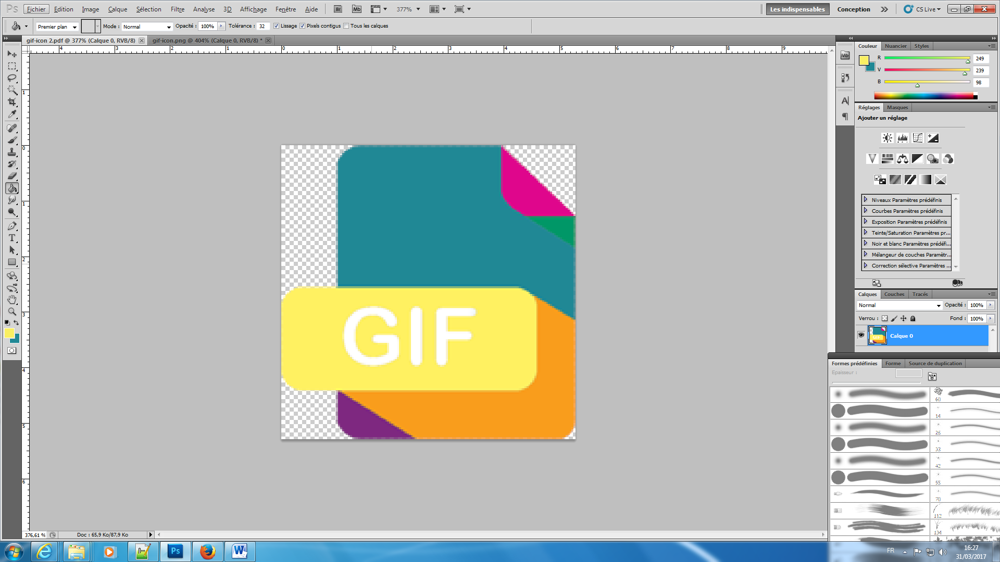
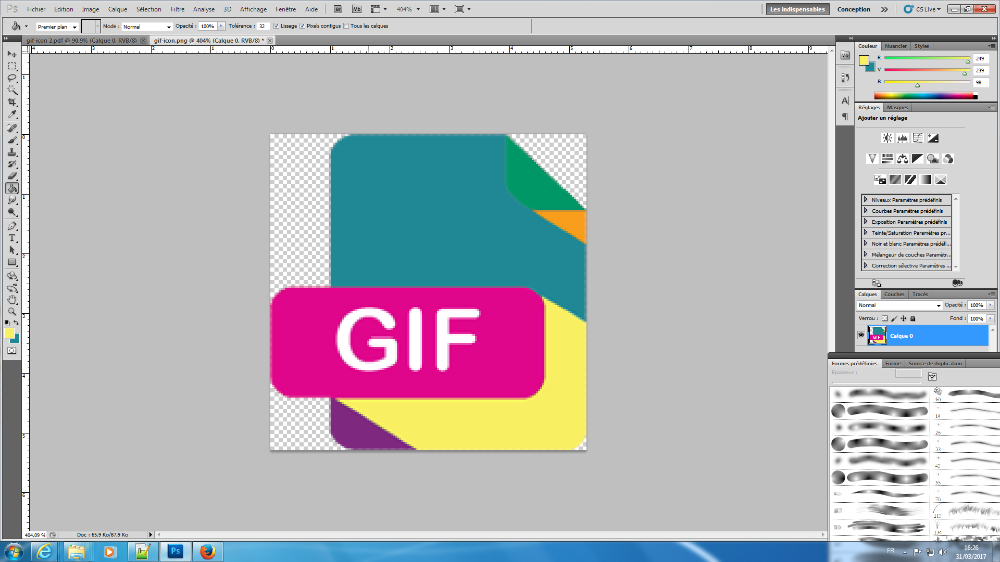

Prendre des images avec la même taille; de préférence avec une dimension assez petite

Puis changer les couleurs de certaines zones afin de créer un contraste


Il ne vous reste plus qu'à aller sur le site de votre choix suivant votre type de gif, ici un gif statique composé de plusisuers images. J'ai donc choisis GIPHY.COM permettant de jouer sur la vitesse de changement d'image et étant simple à l'utilisation.